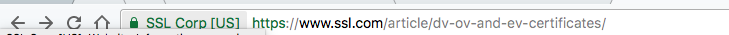
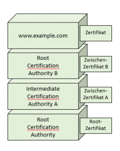

Welche Arten von SSL-Zertifikaten gibt es?
SSL-Zertifikate spielen seit einiger Zeit eine sehr wichtige Rolle. Zwar gibt es die verschlüsselte Datenübertragung von Websiten über https schon länger (bereits 1994 wurde die erste Version offiziell vorgestellt) aber erst in 2014 nahm die Bedeutung für SEO zu. Im August 2014 hat Google bekannt gegeben, dass SSL nun zu den Ranking-Faktoren zählt. Fast zeitgleich (Anfang 2017) haben die beiden bekanntesten Browser Chrome und Firefox eine neue Version vorgestellt. Von nun an werden Webseiten, die SSL nicht nutzen explizit als unsicher ausgezeichnet. Langfristig wird also kein Weg an einem SSL-Zertifikat vorbeiführen.
Es gibt sehr viele Anbieter, bei denen man SSL-Zertifikate bestellen kann und die Preise sind sehr unterschiedlich. So bietet Lets Encrypt kostenlose Zertifikate an und andere Anbieter verlangen dafür mehrere hundert Euro im Jahr. Der Grund dafür ist, dass es natürlich verschiedene Unterscheidungen bei den Zertifikaten gibt. Die eine betrifft die Art, wie das Zertifikat überprüft wird und die andere beschreibt den Gültigkeitsbereich eines Zertifikats.
Wie funktioniert die SSL Zertifizierung?
Ich werde ich nicht zu tief ins Detail gehen und eigentlich reicht es auch aus, das Grundprinzip zu verstehen: Wenn du für deine Internetseite ein Zertifikat einrichten willst, musst du dafür einen sogenannten Private Key und einen Antrag, das CSR (Certificat Signing Request) erstellen. Der Private Key ist der Augapfel, den du beschützen musst. Der CSR enthält die Informationen zu der Person bzw. Organisation, die hinter der Website steckt, die das SSL-Zertifikat erhalten soll. Dazu gehören z.B. der Name, die Anschrift und vor allem natürlich die Domain, über die die Webseite erreichbar ist. Außerdem ist auch die CA in dem Zertifikat vertreten. Warum das wichtig ist, erkläre ich weiter unten.
Das CSR wird dann an eine Zertifizierungsstelle geschickt (die sogenannte CA, Certification Authority), die dir als Antwort ein Zertifikat ausstellt.
Dieses Zertifikat wird dann auf deinem Webserver installiert und jedem Browser, der die Seite aufruft, übermittelt. Der Browser erkennt dann die CA, die das Zertifikat ausgestellt hat und kann der Website dann “vertrauen” bzw. die verschlüsselte Verbindung aufbauen.
[caption id=“attachment_1612” align=“aligncenter” width=“300”] Übersicht über den Zertifizierungsprozess[/caption]
Übersicht über den Zertifizierungsprozess[/caption]
Das Zertifikat bzw. das SSL-Protokoll kann nun zwei Aufgaben erfüllen: Es verschlüsselt die Kommunikation und schafft idealerweise Vertrauen.
Unterscheidung nach der Art der Validierung
Ein Zertifikat soll also Vertrauen schaffen. Das heißt, der Inhaber des Zertifikates muss sich validieren. Dies macht er gegenüber der Zertifizierungsstelle (Certification Authority, CA). Dafür gibt es drei Möglichkeiten. Die schnellste und daher oft günstigste Variante ist die Domain Validation (DV).Die CA prüft dabei lediglich, ob der Antragsteller Besitzer der Domain ist.
Die nächst Stufe ist die Organization Validation (OV). Dabei enthält das Zertifikat auch Informationen zum Unternehmen bzw. dem Besitzer der Domain, wie den Namen und die Anschrift. Diese Informationen werden von der CA zusätzlich geprüft und validiert.
Die höchste Stufe schließlich ist die Extended Validation (EV). Auch hier wird natürlich die Authentizität des Antragstellers geprüft. Der Aufwand ist hier allerdings ungleich höher. So verlangt ssl.com z.B. die Übermittlung unterschriebener Dokumente, unter anderem von einem Notar. Außerdem werden verschiedene Eigenschaften des Unternehmens geprüft, nicht zuletzt die ladungsfähige Anschrift oder die Telefonnummer. Im Browser wird die EV dann durch kenntlich gemacht, dass der Name des Unternehmens bzw. Besitzer neben der URL dargestellt wird:
[caption id=“attachment_1531” align=“aligncenter” width=“729”] 
{kind=link}
Natürlich können die Preisunterschiede auch andere Gründe haben, wie z.B. ganz banal die Kostenkalkulation des Anbieters oder die Aufwände, die z.B. der eigene Hoster mit der Pflege und Beantragung hat.
Unterscheidung nach Umfang des Zertifikats
Natürlich wird ein Zertifikat immer nur für einen bestimmten Adressaten, eine Domain ausgeschrieben, wie z.B. www.example.com. Doch auch hier gibt es Ausnahmen. Wie zum Beispiel das Wildcard-Zertifikat. Damit ist es möglich, beliebig viele Sub-Domains ebenfalls in das Zertifikat mit aufzunehmen. So könnte ein Wildcard-Zertifikat für *.example.com jede Sub-Domain unterhalb von example.com verwendet werden: www.example.com, mail.example.com, ftp.example.com und so weiter. Für untergeordnete Sub-Domains (sub.www.example.com) funktioniert das allerdings nicht.
Daneben gibt es Multi-Domain-Zertifikate, auch SAN (Subject Alternative Name) genannt. Diese Zertifikate können für beliebige Domains ausgestellt werden. Die Domains müssen aber explizit angegeben werden. So kann ein SAN-Zertifikat für www.example.com, ftp.foobar.org und mail.google.com genutzt werden.
Was ist eine Zertifikats-Kette?
[caption id=“attachment_1614” align=“alignright” width=“238”] 
{kind=link}
Nun ist es so, dass der Browser nicht nur blind irgendwelchen Zertifikaten vertraut. Die könnte man sich ja auch selber ausstellen. Aus diesem Grund gibt es so genannte Wurzel-Zertifikate bzw. Zertifikate von Root CAs. Es gibt also Organisationen, denen der Browser vertraut. Deren Zertifikate sind oft im lokalen Speicher installiert und der Browser kann prüfen, ob das Zertifikat für www.example.com von einer vertrauenswürdigen Organisation ausgestellt wurde. Denn das Zertifikat erhält ja auch den Verweis auf die Stelle, von der das Zertifikat einmal ausgestellt wurde. Oft ist es allerdings so, dass man Zertifikate nicht nur bei den Root CAs bestellt, sondern auch bei deren “Delegierten” - den Intermediate CAs. Um dem Browser nun klar zu machen, dass er auch der Intermediate CA vertrauen kann, muss eben diese Zertifikats-Kette übermittelt werden. Das ist im Grunde nichts weiter als ein Liste von Zertifikaten, mit denen die Vertrauenswürdigkeit der beteiligten Zertifikats-Stellen bescheinigt wird.
Der Server hinter www.example.com liefert also nicht nur das Zertifikat für die Seite selber aus, sondern auch alle Zwischenzertifikate - in der sogenannten Zertifikatskette.